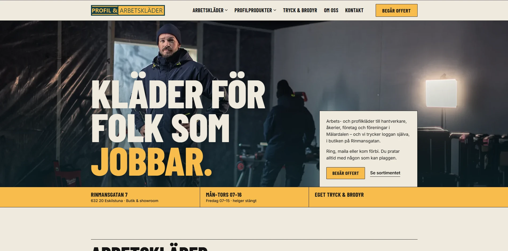

Hemsidor

Profil & Arbetskläder — ny hemsida
- Utmaning: Profil & Arbetskläder säljer arbets- och profilkläder samt tryck & brodyr till hantverkare, åkerier och företag i Mälardalen, med butik på Rinmansgatan i Eskilstuna. De behövde en hemsida som höll samma tempo som verksamheten själv — snabb, sökmotorvänlig och lika enkel att hitta rätt i på mobilen som på datorn.
- Lösning: Vi byggde en ny hemsida från grunden med sökmotoroptimering inbyggd från start: korrekt metadata och strukturerad data (JSON-LD) på varje sida, snabb laddningstid utan onödig kod, och en tydlig sidstruktur för både besökare och sökmotorer. Sidan är fullt responsiv, byggd enligt god praxis för tillgänglighet — semantisk HTML, tydliga kontraster, synliga fokusmarkeringar och fullt stöd för tangentbordsnavigering — så att fler kan använda den. Ett kontaktformulär med spamskydd är kopplat direkt till verksamheten, så nya förfrågningar hamnar rätt direkt.
- Resultat: Hemsidan är klar och driftsatt — snabb, sökmotoroptimerad och tillgänglig rakt igenom, redo att bära sortimentet digitalt lika bra som butiken gör det på Rinmansgatan.
- Tillgänglighet: Uppfyller alla krav i WCAG.